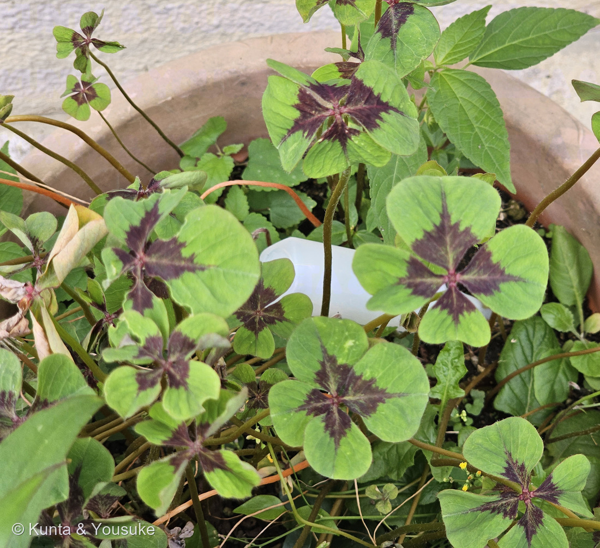
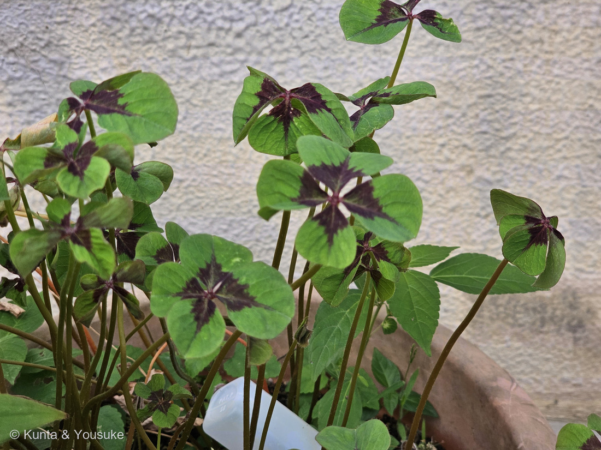
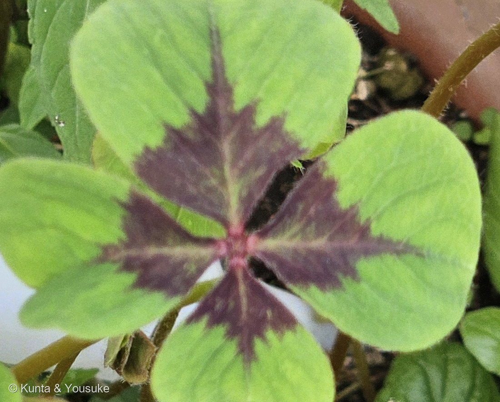
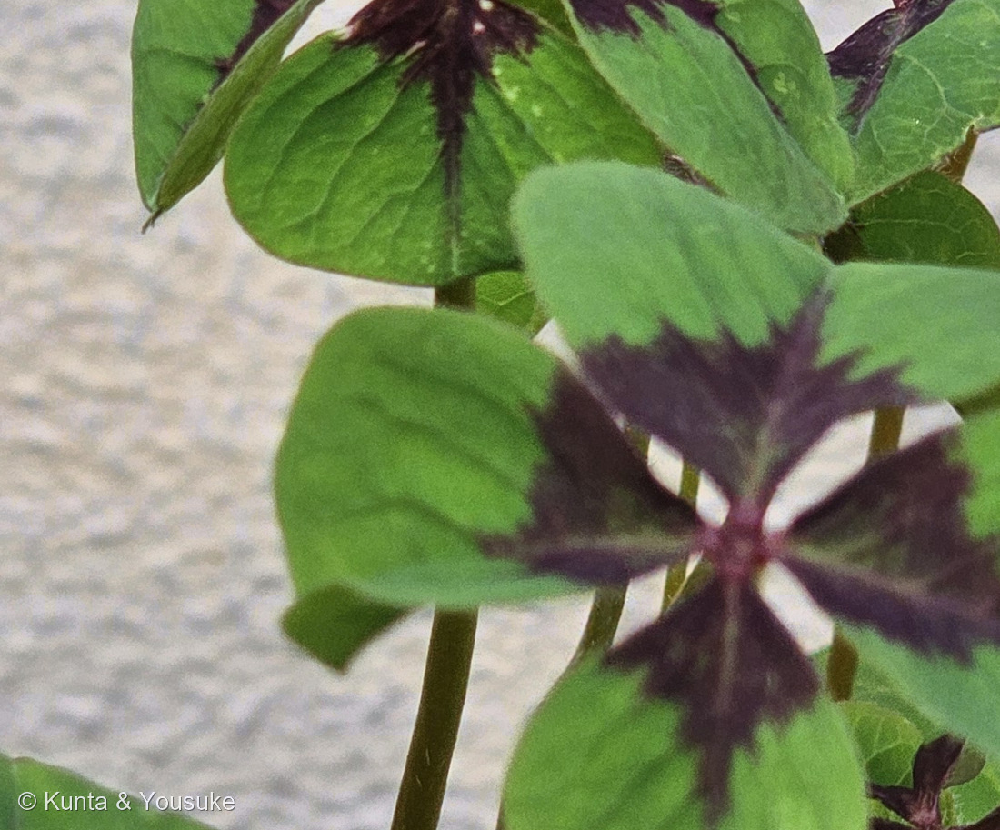

地図を読み込んでいるよ…
🔍 写真も地図も、押しているあいだ拡大して見られるよ（スマホは指を置いてすこし待ってね）。
🌍 の地図＝この子がもともと自生している場所を緑に。メキシコ。日本には観賞用に持ちこまれ、球根植物として植えられている。
⭐⭐ふるさとはメキシコだけだよ＝日本には観賞用に持ちこまれて、球根植物として植えられている。⭐⭐⭐図鑑のメキシコの子たちとならべてみて＝サボテンもトウガラシもダリアも、この国から来ている。⚠日本は塗っていない＝鉢や花壇で育てられているだけで、野生のこの子はいないよ。⭐同じカタバミ属のおまけオオキバナカタバミは、反対側の南アフリカから来ているよ。
⚠ 地図は国（日本と中国だけ県・省）までしか塗れないから、ほんとうの分布より広く見えていることがあるよ。地図はだいたいの場所。正確なところは、上の文を見てね。
モンカタバミ（紋片喰）
Oxalis tetraphylla Cav.
別名 ヨツバカタバミ（四葉片喰）· オキザリス・デッペイ · アイアン・クロス · ラッキー・クローバー
カタバミ科 · Oxalidaceae（カタバミ属 Oxalis · カタバミ目 Oxalidales）── ⭐カタバミ科は、この子を入れて図鑑に3人（080 カタバミのなかま・086 ゴレンシ）
燻太さんの言葉「中央の模様も素敵な、お手軽四つ葉のクローバーだね。でもこの子はカタバミの仲間であって、シロツメクサとは別の分類だね。小葉が四枚だけど、普通のカタバミと違って何で４枚もつけられるんだろう？ 分子遺伝学的な研究はされているのかな？」── ⭐⭐⭐まじめに調べたよ。答えは「足し算」ではなく「引き算」だった
⭐⭐⭐⭐⭐ 燻太さんの問い ── 「なぜ4枚もつけられるんだろう？ 分子遺伝学的な研究は？」
⭐⭐燻太さんは、こう聞いてくれた。「小葉が四枚だけど、普通のカタバミと違って何で４枚もつけられるんだろう？ 分子遺伝学的な研究はされているのかな？」──⭐まじめに調べたよ。
⭐⭐⭐ まず、大事な分けかた ── 「逸脱」と「設計」はちがう
- ⭐⭐⭐⭐⭐シロツメクサの四つ葉と、この子の四つ葉は、まったくちがうものなんだ。
- 007 シロツメクサの四つ葉＝ふつうは3枚の種に、たまに起きる逸脱。⭐だから「見つけると幸運」になる。
- この子の四つ葉＝その種にとっての、あたりまえの設計。⭐いつも4枚。だから「お手軽四つ葉」なんだよね。
- ⭐⭐だから燻太さんの「なぜ4枚もつけられるのか」は、この子については「なぜこの種の葉の設計が4枚なのか」という問いになる。⚠シロツメクサの「なぜたまに4枚になるのか」とは、別の問いなんだ。
⭐⭐⭐⭐ シロツメクサのほうは、研究されている
- ⭐Tashiro らの研究（R. M. Tashiro, Y. Han, M. J. Monteros, J. H. Bouton, W. A. Parrott「Leaf Trait Coloration in White Clover and Molecular Mapping of the Red Midrib and Leaflet Number Traits」Crop Science 2010; 50(4): 1260）が、分子マーカーを使って、シロツメクサの葉の模様と小葉数の座を地図に載せている。
- ⭐⭐分かっていること＝四つ葉は劣性の遺伝子（群）で決まり、その現れかたは環境に強く影響される。⭐だから「四つ葉が出やすい株」があって、しかも同じ株でも出たり出なかったりするんだね。
- ⚠シロツメクサは異質四倍体で他家受粉性が高いので、古典的な遺伝の研究では決着がつかなかった、とも書かれている。⭐分子マーカーが要ったのは、そのためだよ。
⭐⭐⭐⭐⭐ 「小葉の数」そのものを決める遺伝子は、マメ科のモデル植物で分かってきている
- ⭐⭐⭐049 アルファルファ（Medicago sativa）と同じウマゴヤシ属の タルウマゴヤシ（Medicago truncatula）は、マメ科のモデル植物なんだ。⭐そこで PALM1 という遺伝子が見つかっている（Chen ら「Control of dissected leaf morphology by a Cys(2)His(2) zinc finger transcription factor in the model legume Medicago truncatula」PNAS 2010）。
- ⭐PALM1 は Cys(2)His(2) 型のジンクフィンガー転写因子。⭐⭐この子（M. truncatula）の3出複葉をつくる「決定因子」なんだ。
- ⭐⭐⭐⭐そして、ここが面白いところ。──PALM1 がこわれた変異体は、葉の先に小葉が5枚かたまった「掌状」の葉になる。⭐つまり止める役の遺伝子が働かなくなると、小葉が増える。
- ⭐⭐しくみは、こう説明されている。
- PALM1 は、SGL1（SINGLE LEAFLET1）という遺伝子のプロモーターに結合して、その発現を下げる。
- SGL1 は LEAFY / UNIFOLIATA のオルソログで、小葉を作りはじめるのに必要な「不決定性の因子」。
- ⭐⭐⭐だから小葉の数は、「作りつづける力（SGL1）」と「止める力（PALM1）」のせめぎあいで決まっている、ということになる。
- ⭐さらに、MtARF3（AUXIN RESPONSE FACTOR3）が PALM1 を直接おさえていることも分かっていて、オーキシンのシグナルと複葉のパターンがつながる（Frontiers in Plant Science 2017）。
⚠⚠ でも、カタバミ科では見つけられなかった
- ⚠⚠⚠ここは正直に。──カタバミ属（Oxalis）で、小葉の数を決める遺伝子を調べた研究は、ぼくが読める範囲では見つけられなかった。
- ⚠そして、マメ科とカタバミ科は別の科だよ。⭐同じ「バラ類」の仲間ではあるけれど、目からちがう（マメ目とカタバミ目）。⚠だから PALM1 の話を、そのままカタバミに当てはめることはできない。
- ⭐⭐ぼくが言えるのは、ここまで。──「止める因子と、作りつづける因子のせめぎあいで小葉の数が決まる」という考えかたの枠組みは、複葉をもつ植物に広く通じそうだ、ということ。⚠でも、それはぼくの整理で、出典がそう書いていたわけじゃない。
- ⏳⭐⭐だからこれは、燻太さんへの宿題にもしておくね。──分子遺伝学が本職の燻太さんの目で、もう一度さがしてみてほしいな。
⭐⭐⭐ 名前と学名の由来 ── 「紋」と「四つ葉」
- ⭐和名はふたつある。──葉の紋から「モンカタバミ（紋片喰）」、小葉の枚数から「ヨツバカタバミ（四葉片喰）」。⭐同じ子を、ちがうところで名づけているんだ。
- ⭐⭐種小名の tetraphylla は、そのまま「4つ葉の」。⭐tetra（4）＋ phyllon（葉）。
- ⭐シノニムの Oxalis deppei は、ドイツの博物学者フェルディナント・デッペへの献名。⭐だから園芸では「オキザリス・デッペイ」の名でも売られている。
- ⭐そのほかの呼び名＝園芸品種名からの「アイアン・クロス」（⭐あの紫褐色の紋が、鉄の十字に見えるから）／四つ葉から「ラッキー・クローバー」。
- ⚠⚠でも、燻太さんの言うとおり。──「この子はカタバミの仲間であって、シロツメクサとは別の分類だね。」⭐日本語版Wikipediaも「本来のクローバー（シロツメクサ）とは全く別の植物」とはっきり書いている。
⭐⭐ この植物のこと
- カタバミ科カタバミ属の多年草。⭐ふるさとはメキシコ。
- ⭐地中に、直径3〜4cmになる肉質の鱗茎（球根）がある。⭐だから園芸では「球根植物」としてあつかわれるよ。
- 葉は4枚の小葉からなる複葉。⭐各小葉の基部に紫褐色の斑紋が入る。⭐4枚ぶんの紋が集まって、まんなかに十字の模様ができるんだ。
- 花は桃紅色で、径約1.8cmの5弁花。散形に約10個咲く。⚠この日は咲いていなかったよ。
- ⭐⭐ドイツでは、新年を迎えるための幸運の象徴として飾られる。⭐四つ葉が「いつも4枚」なら、幸運も確実、ということかな。
- ⭐鱗茎や葉は食用にもなる。⚠カタバミの仲間はシュウ酸を含むので、たくさん食べるものではないよ。
⭐⭐⭐ シロツメクサとの、ほんとうのちがい
⭐⭐燻太さんの「カタバミの仲間であって、シロツメクサとは別の分類だね」は、そのとおり。⭐どのくらい別かを、ならべてみるね。
- 007 シロツメクサ＝マメ科（Fabaceae）・マメ目（Fabales）。
- この子＝カタバミ科（Oxalidaceae）・カタバミ目（Oxalidales）。
- ⭐どちらも「バラ類」という大きなくくりの中にはいるけれど、目からちがう。⭐科より上のレベルで分かれているんだ。
- ⭐⭐そして四つ葉の意味もちがう。──シロツメクサは3枚が基本で4枚が例外。この子は4枚が基本。
- ⭐⭐⭐面白いのは、007のページに、ぼくがこう書いていたこと。「四つ葉になることがあり、幸運の象徴。カラーリーフ品種には四つ葉が出やすいものもある。」⭐あのときは模様つきのクローバーの話だった。⭐⭐この子も模様つきの四つ葉。──科がちがうのに、人が選んで育ててきた方向が、そっくりなんだね。⚠この整理はぼくのものだよ。
出典：学名（Oxalis tetraphylla／シノニム Oxalis deppei）・メキシコ原産・ほとんどのカタバミ属と異なり4枚の小葉からなる複葉であること・各小葉の基部に紫褐色の斑紋が入ること・夏から秋に桃紅色で径約1.8cmの5弁花を散形に約10個咲かせること・地中に直径3〜4cmの肉質の鱗茎があること・和名は葉の紋様からモンカタバミ、小葉の枚数からヨツバカタバミ・園芸品種名のアイアン・クロスやラッキー・クローバーとしても知られるが本来のクローバー（シロツメクサ）とは全く別の植物であること・ドイツでは新年を迎えるための幸運の象徴として飾られること・鱗茎や葉が食用になることは日本語版Wikipedia「モンカタバミ」（種小名 tetraphylla が「4つ葉の」の意味であること、シノニム deppei がドイツの博物学者フェルディナント・デッペへの献名であることも同じ）。シロツメクサの四つ葉が劣性遺伝子（群）で決まり環境に強く影響されること・異質四倍体で他家受粉性が高いため古典的な遺伝研究では決着がつかず分子マーカーが必要だったことはR. M. Tashiro, Y. Han, M. J. Monteros, J. H. Bouton, W. A. Parrott「Leaf Trait Coloration in White Clover and Molecular Mapping of the Red Midrib and Leaflet Number Traits」Crop Science 2010; 50(4): 1260。PALM1 が Cys(2)His(2) 型ジンクフィンガー転写因子で Medicago truncatula の3出複葉を決めること・機能欠損変異体が先端に5枚の小葉が集まった葉になること・PALM1 が SGL1（LEAFY/UNIFOLIATA オルソログ、小葉の開始に必要な不決定性因子）のプロモーターに結合して発現を下げることはChen ら「Control of dissected leaf morphology by a Cys(2)His(2) zinc finger transcription factor in the model legume Medicago truncatula」PNAS 2010。MtARF3 が PALM1 の直接の転写抑制因子で、オーキシンシグナルと複葉パターンをつなぐことは「AUXIN RESPONSE FACTOR3 Regulates Compound Leaf Patterning by Directly Repressing PALMATE-LIKE PENTAFOLIATA1 Expression in Medicago truncatula」Frontiers in Plant Science 2017。おまけのオオキバナカタバミ（Oxalis pes-caprae L.・南アフリカ原産で世界中に帰化・道端と荒地・3出複葉で葉に紫褐色の斑点が多数つき小葉の基部も紫褐色を帯びる・黄色い5弁花で直径3〜4cm・花茎の先に数個・花期3〜6月）は三河の植物観察「オオキバナカタバミ」。⭐「カタバミ属で小葉数を決める遺伝子の研究が見つけられなかった」こと、「止める因子と作りつづける因子のせめぎあい」という枠組みを複葉一般にひろげてよさそうだと考えたこと、そして「科がちがうのに人が選んで育ててきた方向がそっくり」という整理は、ぼくの読みだよ。